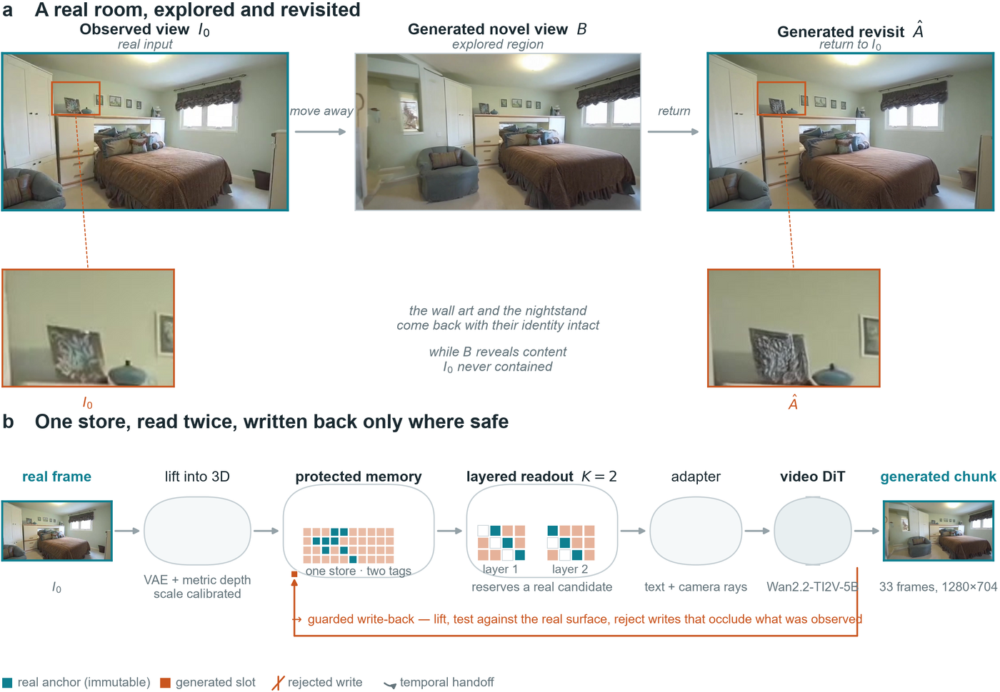
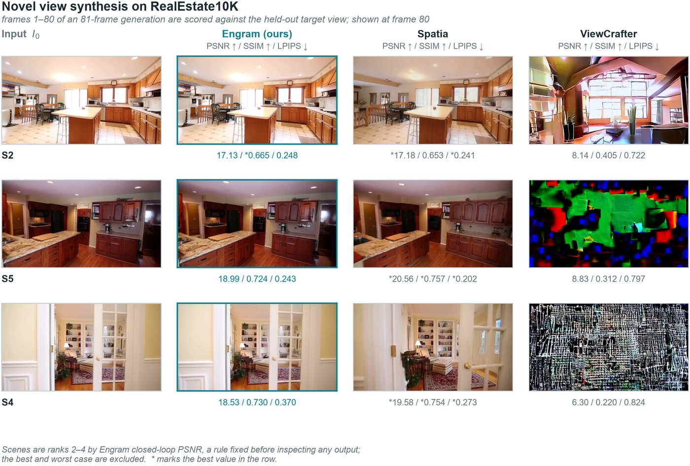
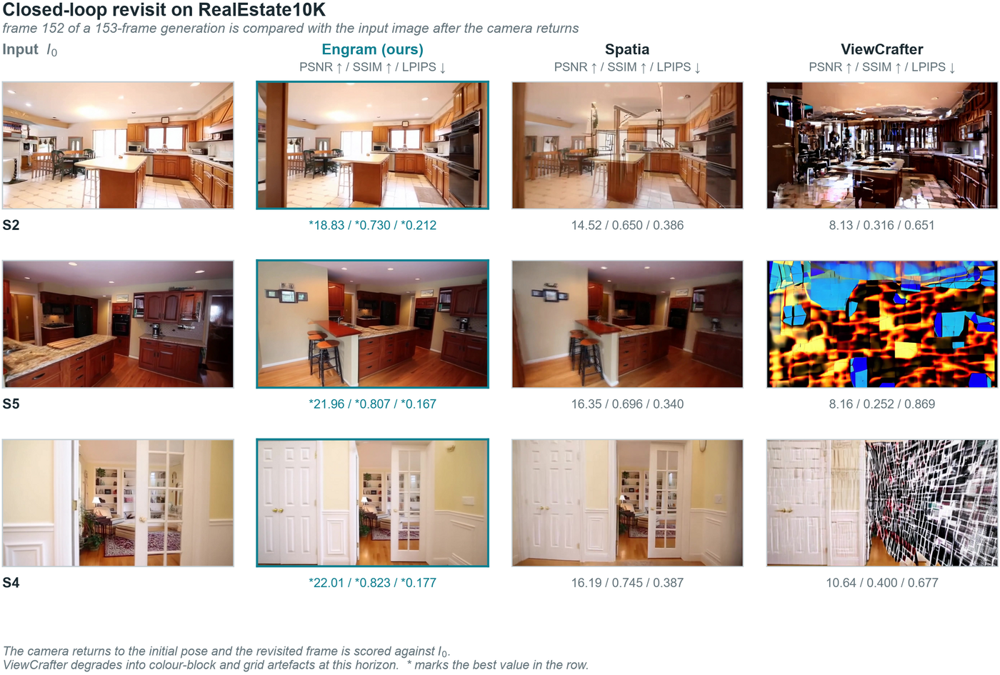

Abstract
Video world models drift when a camera leaves a region and returns: the model has to regenerate content it has already observed, and nothing in a plain latent history tells it which latents came from real pixels. Engram keeps a single latent memory in which every slot carries a provenance tag, protects the slots lifted from observed frames, and reads it through two spatial layers that reserve at least one real candidate in the top-k. Newly generated content is written back only where it does not occlude the initial-view surface. The result is a model that can be explored and revisited without the observed scene dissolving into prior-driven detail.
Method
Three mechanisms, one persistent latent memory.

Protected latent anchors
The initial image is lifted into 3D and written to memory as real. Real slots are immutable under the default write policy, and a real candidate is reserved in every top-k read, so later generated content cannot crowd observed evidence out of the read set.
Layered readout
Camera rays and the trajectory are projected into the store at two spatial scales. Read candidates come from both layers, are confidence-weighted, and are fused into the video DiT as extra conditioning tokens alongside text and camera rays.
Guarded write-back
Generated latents are depth-estimated and lifted back into the store. A write is rejected if it sits in front of the observed surface. The next chunk's prefix is seeded by latent inversion of the last generated frame.
Video Comparisons
Novel view synthesis and closed-loop revisit on five shared RealEstate10K scenes.
Scene
The five scenes were sampled with a fixed seed from 90 complete shared scenes. They are shown for qualitative inspection; they do not establish a full-set ranking. Evaluation details ↓
Novel View Synthesis

Closed-Loop Revisit

Quantitative Results
WorldScore
Reported scores with their evaluation sets. Higher is better.
All metrics and methods
RealEstate10K
Novel view synthesis · 81 frames / Closed-loop revisit · 153 frames
All methods and per-scene scores
Availability and evaluation status
Measured
Pending
BibTeX
Provisional citation · author list to be finalized